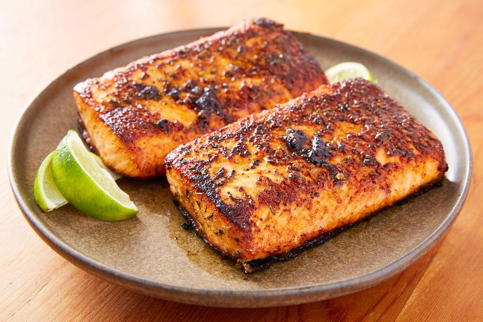

Blackened Salmon Fillets

Description
This is a delicious salmon recipe that can be made from the
comfort of your own home with minimal ingredients! This recipe
will give your salmon a bit of a spicy kick as well as some delicious flavor.
Ingredients
- 2 tablespoons ground paprika
- 1 tablespoon ground cayenne pepper
- 1 tablespoon onion powder
- 2 teaspoons salt
- 1/2 teaspoon ground white pepper
- 1/2 teaspoon ground black pepper
- 1/4 teaspooon dried thyme
- 1/4 teaspoon dried basil
- 1/4 teaspoon dried oregano
- 4 salmon fillets, skin and bones removed
- 1/2 cup unsalted butter, melted
Steps
- Mix paprika, cayenne pepper, onion powder, salt, white and black pepper, thyme, basil, and oregano together in a small bowl.
- Brush salmon fillets on both sides with 1/4 cup butter, and sprinkle evenly with the spice mixture.
- Heat 2 tablespoons melted butter in a large, heavy skillet over high heat. Add salmon and cook until blackened, 2 to 5 minutes. Lift fillets, add remaining melted butter to the skillet, and flip fillets into the butter. Cook until the other side is blackened and fish flakes easily with a fork, 3 to 5 minutes.
Return to Homepage